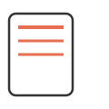
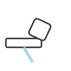
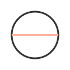
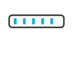
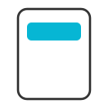
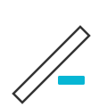
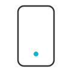

Enlaces directos
Selecciona una sección
Navega rápido entre los temas sin repetir información en la página inicial.
Diseño Responsive
Diseño Web Responsivo
Se le llama Diseño Web Responsivo (o Responsive Web Design en inglés). También es muy común escucharlo simplemente como diseño adaptable. Esta técnica consiste en crear un sitio web de manera que la estructura, las imágenes y los textos se reacomoden, escalen o cambien por completo de forma automática según el tamaño de la pantalla del usuario (desde un celular pequeño, pasando por una tablet, hasta un monitor gigante de PC).
¿Cómo funciona detrás de escena?
Grid y Flexbox: Son sistemas de diseño en CSS que permiten que las cajas de contenido se estiren, se encojan o se muevan de fila a columna de manera fluida.
Media Queries: Son reglas de CSS que le dicen al navegador cómo adaptar estilos según el ancho de la pantalla.
Imágenes y unidades relativas: En lugar de usar tamaños fijos, se usan porcentajes o `max-width:100%` para evitar desbordes.
Imágenes de objetos físicos

Libro
Taza

Martillo

Pelota
Lápiz

Regla
Bombilla

Calculadora

Destornillador

Teléfono